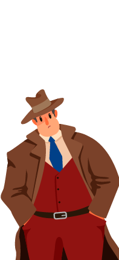

-“A polícia já fechou a mansão e está fazendo uma verredura em todos os ambientes. Precisamos ser perspicaz para capturar essa Sra!”, você fala. -“Certamente ela seguiu por um desses dois caminhos! Qual você acredita que ela foi?” fala Detetive Gomes Qual caminho você quer seguir, Detetive Ricardo?